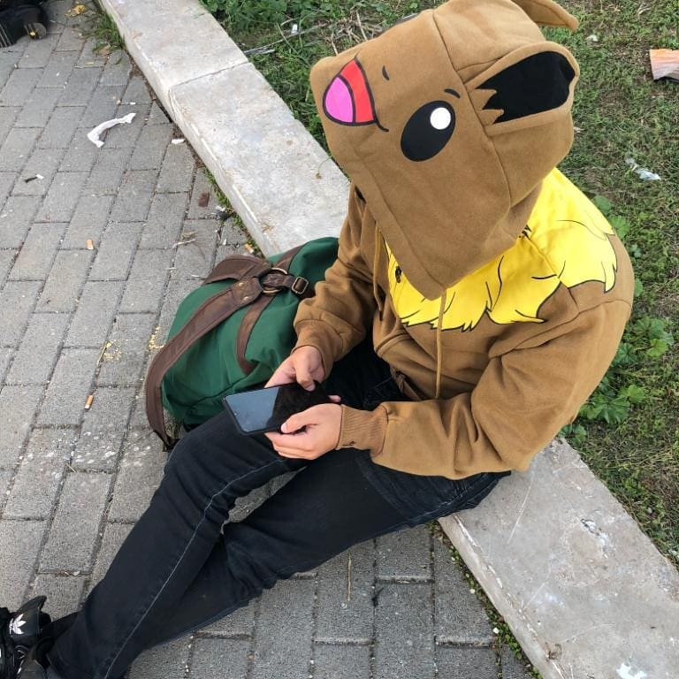

Biografia 
Il mio è Cristian Vollono, nato a Castellammare di Stabia il 29/04/1998, da una famiglia come tante altre.
La mia è stata un vita "movimentata", fino alla superiori sempre bravo a scuola ma poi tutto è cambiato quando mi sono iscritto all'università, precisamente alla facoltà di ingegneria chimica. Un dipartimento che purtroppo oserei dire "buio" come gli anni che sono andati a seguirsi da questa scelta
Tutto è cambiato quando finalmente presi la decisione di iscrivermi (e quindi spostarmi) alla facoltà di informatica. Amici che non pensavo di trovare e professori che non pensavo manco esistessero (a livello anche solo caratteriale) ed eccoci qui, in fondo questa è la mia storia (in breve) ma non voglio dilungarmi oltre. Chiunque stia leggendo vorrà sapere cosa so fare, bhe questo sito/post sarà in continuo aggiornamento (almeno lo spero). Di seguito saranno spiegate le mie conoscenze informatiche e non.
Conoscenze informatiche e non:
- (Informatica) Conoscenza basilare del linguaggio C con attenzione alle strutture dati
- (Informatica) Conoscenza basilare di HTML e CSS per creazione di siti semplici ma efficaci
- (Informatica) Conoscenze teoriche/pratiche di sistemi operativi
- (Informatica) Conoscenze basilari su SQL e database relativi, particolare attenzione a Schemi ER e documentazioni
- (Lavorativo) Lavorato e Lavoro in ambito ristorazione e bar con conseguente conoscenza di accoglienza, gestione di sala e avvenire
- (Generale) Ottima conoscenza della lingua Inglese (B2 conseguito a Fisciano)
- (Divertente) Ottimo giocatore di videogiochi e "platinatore" seriale (Ognuno ha i suoi hobby e problemi)